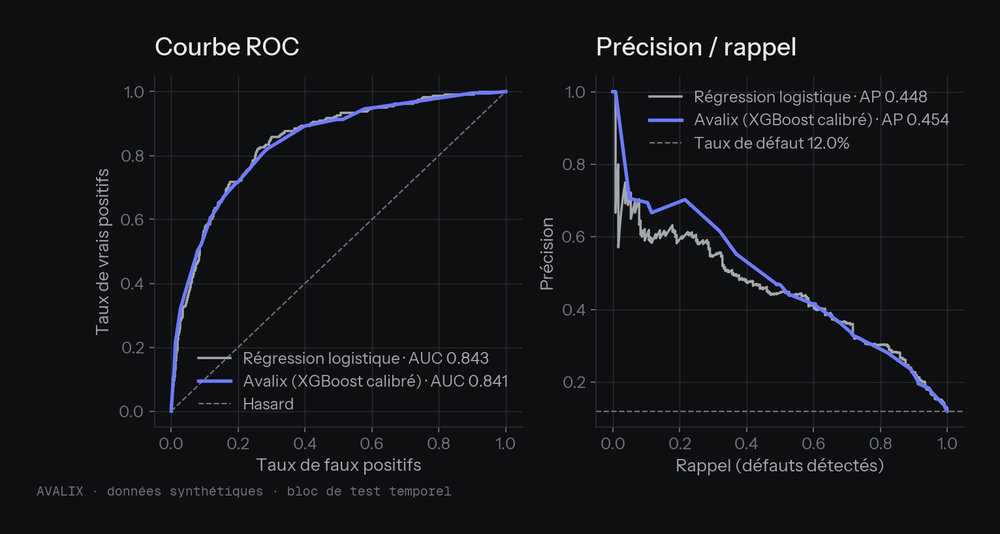
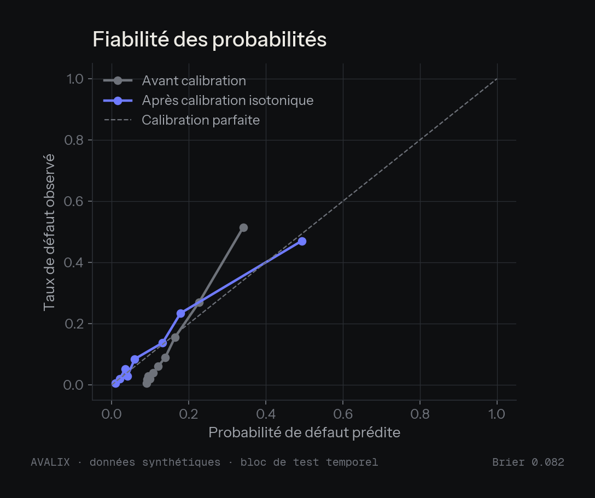
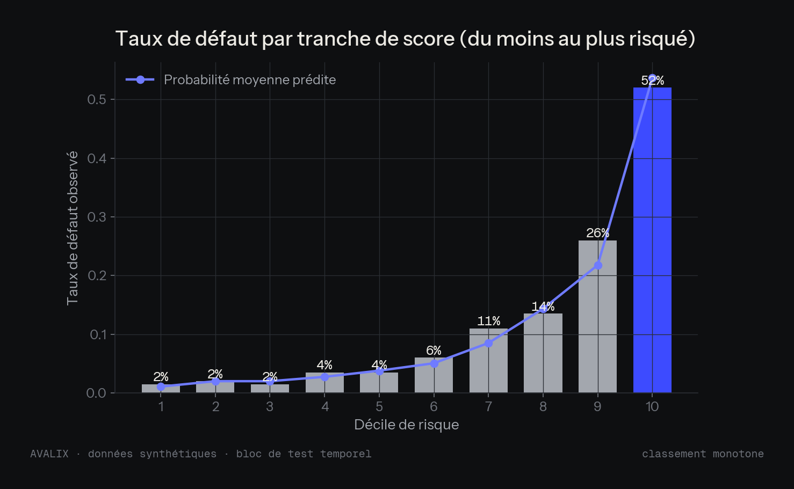
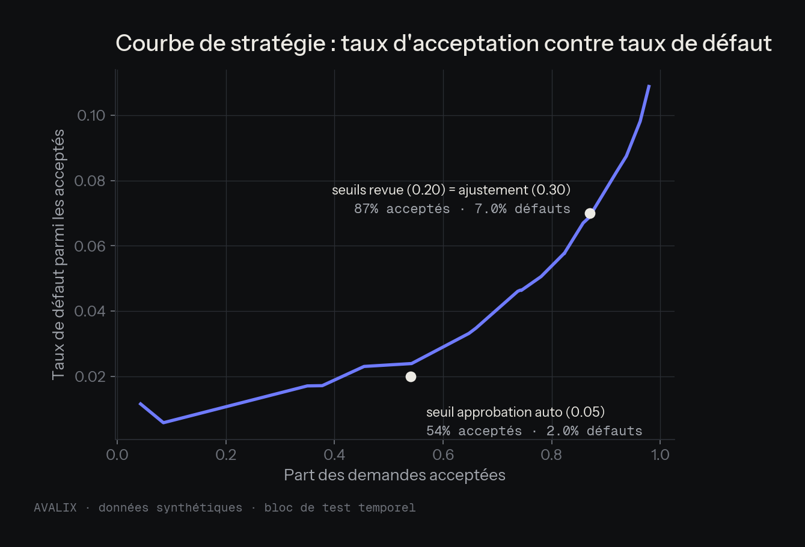
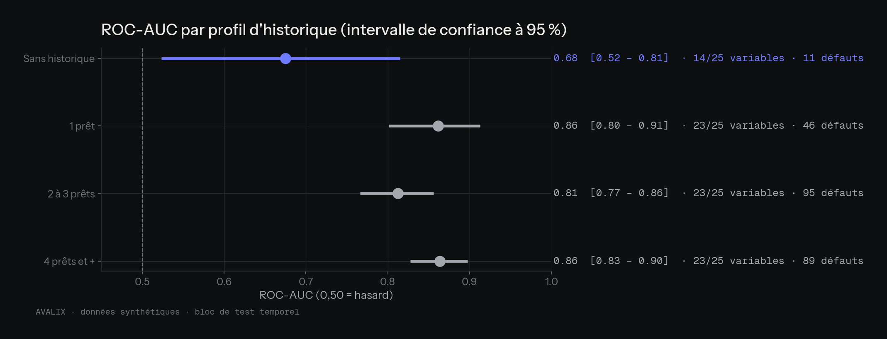
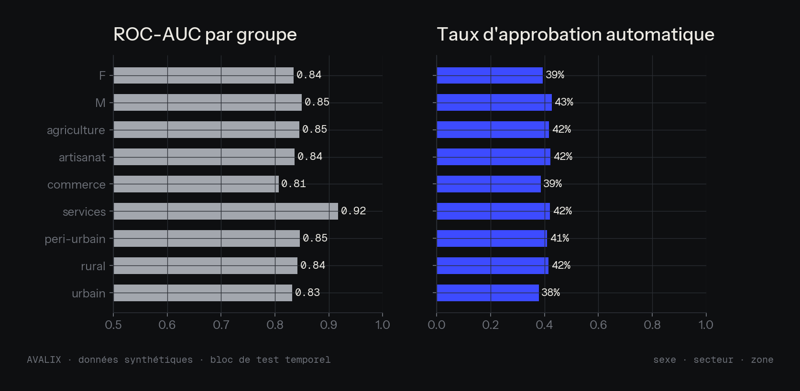
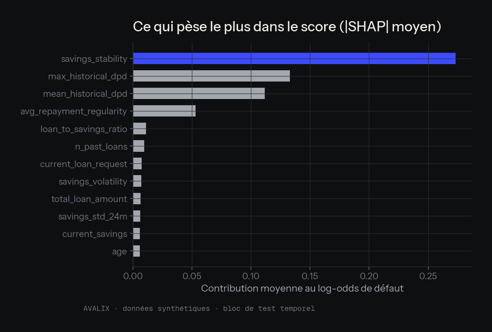
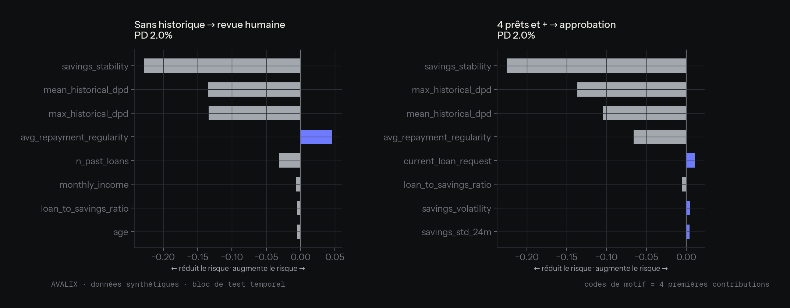
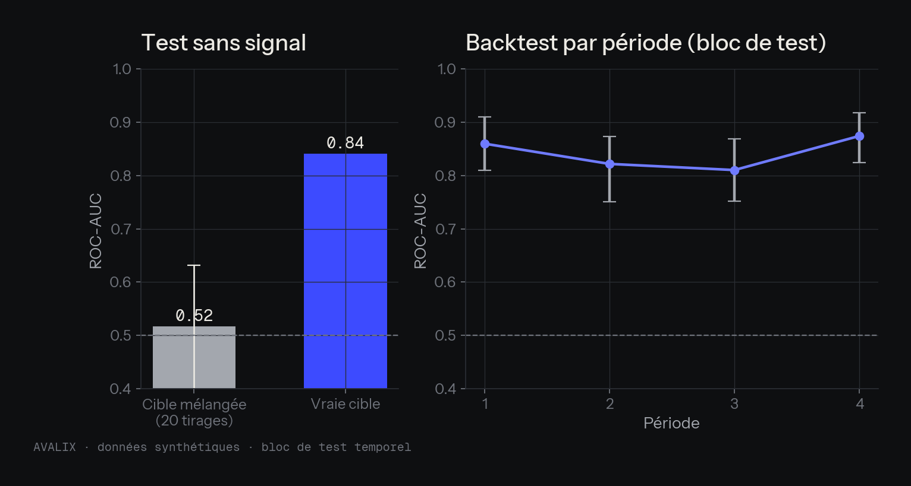
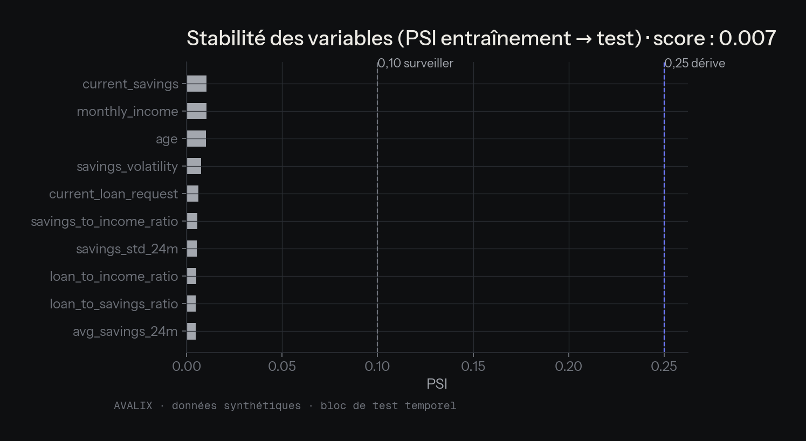

Un moteur de décision qui sait quand il ne sait pas
Données synthétiques. Ce rapport démontre une méthode ; il ne mesure aucune performance réelle. Toutes les métriques sont calculées sur le bloc de test temporel (2000 demandes, 12,0 % de défauts), jamais vu pendant l'entraînement (6000) ni la calibration (2000).
1. Performance (analyse des résultats)
| Métrique | Avalix | IC 95 % (bootstrap) | Régression logistique |
|---|---|---|---|
| ROC-AUC | 0,841 | [0,813 – 0,866] | 0,843 |
| Gini | 0,683 | [0,627 – 0,733] | 0,686 |
| KS | 0,534 | [0,487 – 0,591] | 0,563 |
| PR-AUC | 0,454 | [0,392 – 0,523] | 0,448 |
| Brier (plus bas = mieux) | 0,082 | [0,074 – 0,091] | 0,083 |
Modèle challenger. La régression logistique fait jeu égal avec XGBoost : leurs intervalles de confiance se recouvrent largement. Sur ces données synthétiques, la complexité du modèle n'apporte pas de gain mesurable ; la valeur du système tient à la calibration, aux seuils et à la revue humaine, pas au choix de l'algorithme. Sur données réelles, le modèle le plus simple sera retenu tant qu'il ne fait pas significativement moins bien.

2. Calibration et classement
Une probabilité de 10 % doit correspondre à environ 10 % de défauts observés. Le taux de défaut doit croître d'une tranche de score à l'autre (classement monotone).



3. Les clients sans historique
| Profil | Demandes | Défauts | Variables | ROC-AUC | IC 95 % |
|---|---|---|---|---|---|
| Sans historique | 330 | 11 | 14/25 | 0,68 | [0,52 – 0,81] |
| 1 prêt | 334 | 46 | 23/25 | 0,86 | [0,80 – 0,91] |
| 2 à 3 prêts | 695 | 95 | 23/25 | 0,81 | [0,77 – 0,86] |
| 4 prêts et + | 641 | 89 | 23/25 | 0,86 | [0,83 – 0,90] |
Décisions du moteur sur le bloc de test : REVUE_HUMAINE 924 · APPROBATION 817 · REFUS 252 · AJUSTEMENT 7. Pour les demandeurs sans historique : REVUE_HUMAINE 330. Faute d'information, ils sont orientés vers une revue humaine plutôt qu'approuvés ou refusés automatiquement.

4. Équité

5. Explicabilité


6. Contrôles et stabilité
Test sans signal : en mélangeant la cible, le modèle tombe en moyenne à 0,52 sur 20 tirages (intervalle 0,38–0,63, hasard = 0,50) : il n'apprend pas d'artefact. PSI du score entre entraînement et test : 0,007 (alerte au-delà de 0,25).


Limites
- Données synthétiques ; le générateur repose en partie sur un facteur de risque latent (voir
data/raw/DATASET.md). - Absence d'historique codée comme un historique propre. Sans prêt passé, les retards valent 0 : le modèle lit « aucun retard » là où il devrait lire « aucune information » (voir l'explication locale, section 5). Le générateur synthétique rend ces demandeurs peu risqués (environ 3 % de défauts), ce qui masque le problème ici. C'est pourquoi le moteur de décision ne laisse jamais le score seul trancher pour eux. Correctif prévu avant toute donnée réelle : valeurs manquantes explicites et indicateur « sans historique ».
- L'ordre des identifiants sert de substitut à la date de demande.
- Les seuils de décision et les coûts sont provisoires et devront être recalibrés sur données réelles.
Régénérer : uv run avalix-report